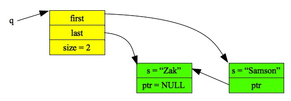
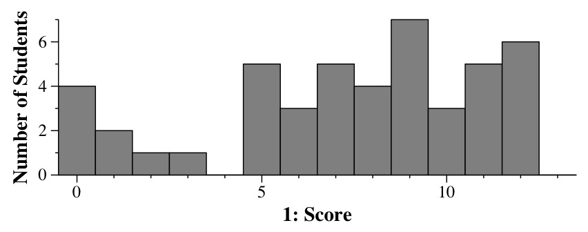
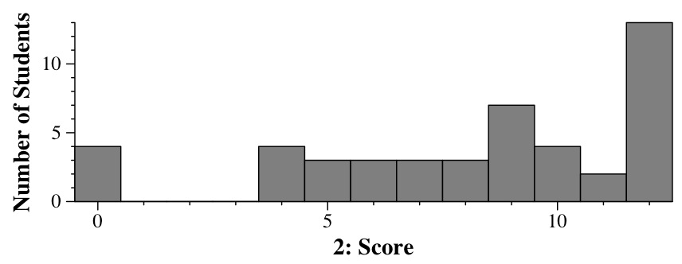
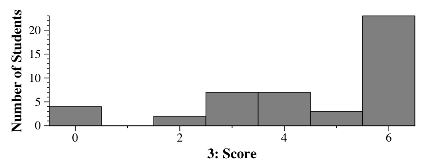
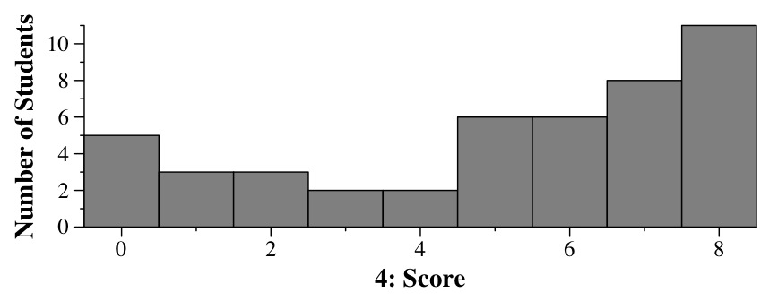
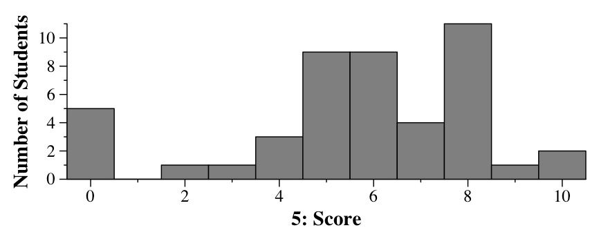
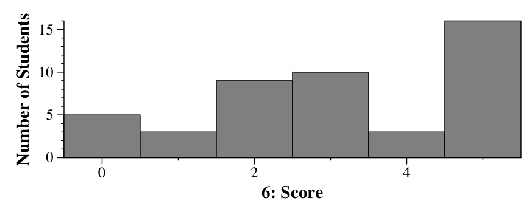

|
|  |
Part B: To push, you have to do two things, depending on the current size of the queue. If it is zero, then simply create a one-element queue whose first and last pointers point to the only node. Otherwise, you allocate a new node, and have the last element point to it. In either case, you update the size:
void Queue::Push(string s)
{
Qnode *n;
n = new Qnode;
n->s = s;
n->ptr = NULL;
if (size == 0) {
first = n;
} else {
last->ptr = n;
}
last = n;
size++;
}
|
Part C: The easy way is to do a simple loop using Empty() and Pop:
Queue::~Queue()
{
while (!Empty()) Pop();
}
|
That only gets you half credit, though, because it is inefficient performance-wise. Instead, start at the first node and traverse to the back, calling delete:
Queue::~Queue()
{
Qnode *tmp;
while (first != NULL) {
tmp = first;
first = first->ptr;
delete tmp;
}
}
|
|  |
Part B: With quadratic probing, we add i2 to the index for i equals 0, 1, 2 and 3. Therefore, the indices are 44, 45, 48 and 3 (since you have to take the result mod 50).
Part C: With double hashing, we add i*h to the index for i equals 0, 1, 2 and 3, and h equal to the other hash. The other hash in this case is 230264537, which equls 37 mod 50. Therefore, the indices are 44, 81%50 = 31, 118%50 = 18 and 155%50 = 5.
Part D: We perform the same mechanics as in Part C, only now the initial index is 2 and h is 32. Therefore, the indices are 2, 34, 66%50 = 16 and 98%50 = 48.
|  |
|  |
#include <set>
#include <iostream>
using namespace std;
main()
{
multiset <string> l;
multiset <string>::iterator lit;
string s;
while (getline(cin, s)) l.insert(s);
for (lit = l.begin(); lit != l.end(); lit++) cout << *lit << endl;
}
|
|  |
0: 3 -> 1 1: 1 -> 1 2: 1 -> 3 |
Command B: This sets mod equal to 7. We then have 6%7=6, 5%7=5, 13%7=6, 20%7=6 and 27%7=6. Thus, the map holds the following [key,value] pairs: [5,1], [6,6]. The program prints:
5: 1 -> 4 6: 4 -> 0 |
Command C: This sets mod equal to 5. We then have 100%5=0, 54%5=4, and 15%5=0. Thus, the map holds the following [key,value] pairs: [0,2], [4,1]. However, when i equals zero in the loop, looking up m[1] to print it out actually inserts it into the map with a value of zero. Therefore, all values of i are printed, between 0 and 4:
0: 2 -> 0 1: 0 -> 0 2: 0 -> 0 3: 0 -> 1 4: 1 -> 2 |
|  |
Second, if they just had Users in their second field, then the users in Names would have to be duplicates of those in Phones. Were you to perform an action such as Add_Phone() or Remove_Phone(), it would have to act on both the copy in Names and the copy in Phones (and any other copy that you would have. By storing a pointer, Add_Phone() and Remove_Phone() add or remove a phone from one User, which is pointed to by Names and Phones.
|  |
The program works as follows -- keep a vector count for the digits, where count[i] is the number of times digit i appears in the number. If i is nine, you add it to count[6].
When you're done, set count[6] to (count[6]+1)/2. Then find the maximum value in count -- that is the number of sets.
Here's the code. I've bundled it up into a program that takes the number on the command line in q7.cpp:
int RoomNumber::numberOfSets(int n)
{
vector <int> count;
int i;
int digit;
int max;
count.resize(9, 0);
while (n > 0) {
digit = n % 10;
n /= 10;
if (digit == 9) digit = 6;
count[digit]++;
}
count[6] = (count[6]+1)/2;
max = 0;
for (i = 0; i < 9; i++) if (count[i] > max) max = count[i];
return max;
}
|
|